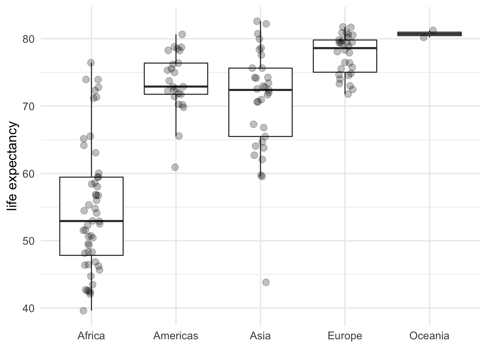

# Explain:
# R Packages
# Install once, load for every script
library(readr)
# Explain:
# file path
## qmd and rmd always look in directory that they are stored
# Explain:
# function
# argument
# assignment operator
# object
# Environment
waste_data <- read_csv(file = "data/raw_data/abidjan-waste-characterization.csv")Live Coding - Data Science Lifecycle
Live Coding
In live coding exercises, the lecturer uses their computer to write code live for learners to follow along. Learners should write the code at the same time as the lecturer for practise.
Data import
Data can be imported from many different sources. In this exercise, we import data from:
- a CSV file that is stored locally in our repository,
- an R Package that is loaded via the
library()function.
CSV file stored locally
Waste Characterization Data, Abidjan, Cote d’Ivoire
The data in this exercise come from a study undertaken in Abidjan, Cote d’Ivore (Waste2Worth Innovations 2020). The data is stored in the sub-folder “raw_data” within the “data” folder. We are using a function from the readr R Package to import the data.
# Explain: dplyr
# An R Package for data manipulation
# glimpse() function is part of that R Package
# other functions are part of base R (come with R installation)
library(dplyr)
waste_data# A tibble: 2,080 × 4
Date Sample Category `mass (kg)`
<chr> <chr> <chr> <dbl>
1 23-Feb 23-A1 Food/Organic 36.5
2 23-Feb 23-B1 Food/Organic 65.0
3 23-Feb 23-A2 Food/Organic 62.4
4 23-Feb 23-B2 Food/Organic 72.6
5 23-Feb 23-A3 Food/Organic 88.6
6 23-Feb 23-B3 Food/Organic 69.1
7 23-Feb 23-A4 Food/Organic 66.0
8 23-Feb 23-B4 Food/Organic 89.6
9 23-Feb 23-A5 Food/Organic 53.9
10 23-Feb 23-B5 Food/Organic 67.5
# … with 2,070 more rowsglimpse(waste_data)Rows: 2,080
Columns: 4
$ Date <chr> "23-Feb", "23-Feb", "23-Feb", "23-Feb", "23-Feb", "23-Feb"…
$ Sample <chr> "23-A1", "23-B1", "23-A2", "23-B2", "23-A3", "23-B3", "23-…
$ Category <chr> "Food/Organic", "Food/Organic", "Food/Organic", "Food/Orga…
$ `mass (kg)` <dbl> 36.52, 65.04, 62.42, 72.60, 88.56, 69.14, 65.98, 89.58, 53…str(waste_data)spec_tbl_df [2,080 × 4] (S3: spec_tbl_df/tbl_df/tbl/data.frame)
$ Date : chr [1:2080] "23-Feb" "23-Feb" "23-Feb" "23-Feb" ...
$ Sample : chr [1:2080] "23-A1" "23-B1" "23-A2" "23-B2" ...
$ Category : chr [1:2080] "Food/Organic" "Food/Organic" "Food/Organic" "Food/Organic" ...
$ mass (kg): num [1:2080] 36.5 65 62.4 72.6 88.6 ...
- attr(*, "spec")=
.. cols(
.. Date = col_character(),
.. Sample = col_character(),
.. Category = col_character(),
.. `mass (kg)` = col_double()
.. )
- attr(*, "problems")=<externalptr> nrow(waste_data)[1] 2080ncol(waste_data)[1] 4Stored in a R data package
Gapminder
The data is an excerpt of the Gapminder data on life expectancy, GDP per capita, and population by country. Compiled for the purpose of teaching with data until 2007. It is not a definitive source of socioeconomic data and it is not updated (Bryan, Kim, and MacDonald 2017).
library(gapminder)
gapminder# A tibble: 1,704 × 6
country continent year lifeExp pop gdpPercap
<fct> <fct> <int> <dbl> <int> <dbl>
1 Afghanistan Asia 1952 28.8 8425333 779.
2 Afghanistan Asia 1957 30.3 9240934 821.
3 Afghanistan Asia 1962 32.0 10267083 853.
4 Afghanistan Asia 1967 34.0 11537966 836.
5 Afghanistan Asia 1972 36.1 13079460 740.
6 Afghanistan Asia 1977 38.4 14880372 786.
7 Afghanistan Asia 1982 39.9 12881816 978.
8 Afghanistan Asia 1987 40.8 13867957 852.
9 Afghanistan Asia 1992 41.7 16317921 649.
10 Afghanistan Asia 1997 41.8 22227415 635.
# … with 1,694 more rowsglimpse(gapminder)Rows: 1,704
Columns: 6
$ country <fct> "Afghanistan", "Afghanistan", "Afghanistan", "Afghanistan", …
$ continent <fct> Asia, Asia, Asia, Asia, Asia, Asia, Asia, Asia, Asia, Asia, …
$ year <int> 1952, 1957, 1962, 1967, 1972, 1977, 1982, 1987, 1992, 1997, …
$ lifeExp <dbl> 28.801, 30.332, 31.997, 34.020, 36.088, 38.438, 39.854, 40.8…
$ pop <int> 8425333, 9240934, 10267083, 11537966, 13079460, 14880372, 12…
$ gdpPercap <dbl> 779.4453, 820.8530, 853.1007, 836.1971, 739.9811, 786.1134, …?gapminderData tidying
Once you imported the data, the next step in any data science lifecycle is the tidying of data. It’s about bringing your data into a consistent structure that let’s you focus on the analysis. Depending on how messy the data structure is, this can be tedious task and take up a great part of the data scienbce lifecycle process.
Waste characterization data
Look at the output in the console
- Which principles for data organisation in spreadsheets are not followed?
- Principle 3: Choose Good Names for Things
- Principle 4: Write Dates as YYYY-MM-DD
# Take a look at the data
waste_data # A tibble: 2,080 × 4
Date Sample Category `mass (kg)`
<chr> <chr> <chr> <dbl>
1 23-Feb 23-A1 Food/Organic 36.5
2 23-Feb 23-B1 Food/Organic 65.0
3 23-Feb 23-A2 Food/Organic 62.4
4 23-Feb 23-B2 Food/Organic 72.6
5 23-Feb 23-A3 Food/Organic 88.6
6 23-Feb 23-B3 Food/Organic 69.1
7 23-Feb 23-A4 Food/Organic 66.0
8 23-Feb 23-B4 Food/Organic 89.6
9 23-Feb 23-A5 Food/Organic 53.9
10 23-Feb 23-B5 Food/Organic 67.5
# … with 2,070 more rows# rename dplyr function
# The three rules:
# 1. First argument is always a data frame
# 2. Subsequent arguments say what to do with that data frame
# 3. Always return a data frame
# 4. Don't modify in place
rename(.data = waste_data, Mass = `mass (kg)`)# A tibble: 2,080 × 4
Date Sample Category Mass
<chr> <chr> <chr> <dbl>
1 23-Feb 23-A1 Food/Organic 36.5
2 23-Feb 23-B1 Food/Organic 65.0
3 23-Feb 23-A2 Food/Organic 62.4
4 23-Feb 23-B2 Food/Organic 72.6
5 23-Feb 23-A3 Food/Organic 88.6
6 23-Feb 23-B3 Food/Organic 69.1
7 23-Feb 23-A4 Food/Organic 66.0
8 23-Feb 23-B4 Food/Organic 89.6
9 23-Feb 23-A5 Food/Organic 53.9
10 23-Feb 23-B5 Food/Organic 67.5
# … with 2,070 more rowsrename(waste_data, Mass = `mass (kg)`)# A tibble: 2,080 × 4
Date Sample Category Mass
<chr> <chr> <chr> <dbl>
1 23-Feb 23-A1 Food/Organic 36.5
2 23-Feb 23-B1 Food/Organic 65.0
3 23-Feb 23-A2 Food/Organic 62.4
4 23-Feb 23-B2 Food/Organic 72.6
5 23-Feb 23-A3 Food/Organic 88.6
6 23-Feb 23-B3 Food/Organic 69.1
7 23-Feb 23-A4 Food/Organic 66.0
8 23-Feb 23-B4 Food/Organic 89.6
9 23-Feb 23-A5 Food/Organic 53.9
10 23-Feb 23-B5 Food/Organic 67.5
# … with 2,070 more rowswaste_data %>%
rename(Mass = `mass (kg)`)# A tibble: 2,080 × 4
Date Sample Category Mass
<chr> <chr> <chr> <dbl>
1 23-Feb 23-A1 Food/Organic 36.5
2 23-Feb 23-B1 Food/Organic 65.0
3 23-Feb 23-A2 Food/Organic 62.4
4 23-Feb 23-B2 Food/Organic 72.6
5 23-Feb 23-A3 Food/Organic 88.6
6 23-Feb 23-B3 Food/Organic 69.1
7 23-Feb 23-A4 Food/Organic 66.0
8 23-Feb 23-B4 Food/Organic 89.6
9 23-Feb 23-A5 Food/Organic 53.9
10 23-Feb 23-B5 Food/Organic 67.5
# … with 2,070 more rowswaste_data_clean <- waste_data %>%
rename(Mass = `mass (kg)`)Gapminder data
# Take a look at the data
gapminder # A tibble: 1,704 × 6
country continent year lifeExp pop gdpPercap
<fct> <fct> <int> <dbl> <int> <dbl>
1 Afghanistan Asia 1952 28.8 8425333 779.
2 Afghanistan Asia 1957 30.3 9240934 821.
3 Afghanistan Asia 1962 32.0 10267083 853.
4 Afghanistan Asia 1967 34.0 11537966 836.
5 Afghanistan Asia 1972 36.1 13079460 740.
6 Afghanistan Asia 1977 38.4 14880372 786.
7 Afghanistan Asia 1982 39.9 12881816 978.
8 Afghanistan Asia 1987 40.8 13867957 852.
9 Afghanistan Asia 1992 41.7 16317921 649.
10 Afghanistan Asia 1997 41.8 22227415 635.
# … with 1,694 more rowsData transformation
Once your data is tidy, a common first step is to transform it. This includes:
- narrowing in on what interests you (e.g. all people without toilets in one district, or all data from last year)
- creating new variables from existing (like toilet density, as in number of people per toilet)
- calculating summary statistics (like counts or the mean)
Waste characterization data
waste_data_clean %>%
filter(Sample == "23-A1") # A tibble: 26 × 4
Date Sample Category Mass
<chr> <chr> <chr> <dbl>
1 23-Feb 23-A1 Food/Organic 36.5
2 23-Feb 23-A1 Paper (white) 1.64
3 23-Feb 23-A1 Other recyclable Paper 0
4 23-Feb 23-A1 Non-recyclable Paper 0.29
5 23-Feb 23-A1 Cardboards 1.52
6 23-Feb 23-A1 Textile 1.11
7 23-Feb 23-A1 All Low Value Plastic 8.06
8 23-Feb 23-A1 Medium Value Plastic (#4) 0.11
9 23-Feb 23-A1 PP (#5) 0
10 23-Feb 23-A1 PET (#1) 0.24
# … with 16 more rowswaste_data_clean %>%
filter(Sample == "23-A1") %>%
arrange(desc(Mass)) %>%
filter(Mass != 0)# A tibble: 16 × 4
Date Sample Category Mass
<chr> <chr> <chr> <dbl>
1 23-Feb 23-A1 Food/Organic 36.5
2 23-Feb 23-A1 Inerts 9.6
3 23-Feb 23-A1 Hygiene Items 8.53
4 23-Feb 23-A1 All Low Value Plastic 8.06
5 23-Feb 23-A1 Paper (white) 1.64
6 23-Feb 23-A1 Cardboards 1.52
7 23-Feb 23-A1 Textile 1.11
8 23-Feb 23-A1 Rattan & Wood 0.79
9 23-Feb 23-A1 Unclassified Waste 0.69
10 23-Feb 23-A1 Other Ferrous Metals 0.66
11 23-Feb 23-A1 Non-recyclable Paper 0.29
12 23-Feb 23-A1 PET (#1) 0.24
13 23-Feb 23-A1 HDPE (#2) 0.23
14 23-Feb 23-A1 Medium Value Plastic (#4) 0.11
15 23-Feb 23-A1 (Household) Hazardous waste 0.08
16 23-Feb 23-A1 Fines 0.08waste_data_clean %>%
filter(Sample == "23-A1") %>%
arrange(desc(Mass)) %>%
filter(Mass != 0)# A tibble: 16 × 4
Date Sample Category Mass
<chr> <chr> <chr> <dbl>
1 23-Feb 23-A1 Food/Organic 36.5
2 23-Feb 23-A1 Inerts 9.6
3 23-Feb 23-A1 Hygiene Items 8.53
4 23-Feb 23-A1 All Low Value Plastic 8.06
5 23-Feb 23-A1 Paper (white) 1.64
6 23-Feb 23-A1 Cardboards 1.52
7 23-Feb 23-A1 Textile 1.11
8 23-Feb 23-A1 Rattan & Wood 0.79
9 23-Feb 23-A1 Unclassified Waste 0.69
10 23-Feb 23-A1 Other Ferrous Metals 0.66
11 23-Feb 23-A1 Non-recyclable Paper 0.29
12 23-Feb 23-A1 PET (#1) 0.24
13 23-Feb 23-A1 HDPE (#2) 0.23
14 23-Feb 23-A1 Medium Value Plastic (#4) 0.11
15 23-Feb 23-A1 (Household) Hazardous waste 0.08
16 23-Feb 23-A1 Fines 0.08waste_data_clean_23_A1 <- waste_data_clean %>%
filter(Sample == "23-A1") %>%
arrange(desc(Mass)) %>%
filter(Mass != 0) %>%
mutate(Percent = Mass/sum(Mass) * 100) %>%
arrange(desc(Percent)) Gapminder data
gapminder_yr_2007 <- gapminder %>%
filter(year == 2007)
gapminder_summary_continent <- gapminder_yr_2007 %>%
group_by(continent) %>%
summarise(lifeExp = median(lifeExp))Data visualisation (and tables)
Waste characterization data
Half of the waste in sample 23-A1 was found to be in the Food/Organic category (see Table 1).
library(knitr)
waste_data_clean_23_A1 %>%
select(Category, Mass, Percent) %>%
kable(digits = 1) | Category | Mass | Percent |
|---|---|---|
| Food/Organic | 36.5 | 52.1 |
| Inerts | 9.6 | 13.7 |
| Hygiene Items | 8.5 | 12.2 |
| All Low Value Plastic | 8.1 | 11.5 |
| Paper (white) | 1.6 | 2.3 |
| Cardboards | 1.5 | 2.2 |
| Textile | 1.1 | 1.6 |
| Rattan & Wood | 0.8 | 1.1 |
| Unclassified Waste | 0.7 | 1.0 |
| Other Ferrous Metals | 0.7 | 0.9 |
| Non-recyclable Paper | 0.3 | 0.4 |
| PET (#1) | 0.2 | 0.3 |
| HDPE (#2) | 0.2 | 0.3 |
| Medium Value Plastic (#4) | 0.1 | 0.2 |
| (Household) Hazardous waste | 0.1 | 0.1 |
| Fines | 0.1 | 0.1 |
Gapminder data
gapminder_summary_continent %>%
kable()| continent | lifeExp |
|---|---|
| Africa | 52.9265 |
| Americas | 72.8990 |
| Asia | 72.3960 |
| Europe | 78.6085 |
| Oceania | 80.7195 |
library(ggplot2)
ggplot(data = gapminder_yr_2007,
mapping = aes(x = continent,
y = lifeExp)) +
geom_boxplot(outlier.shape = NA) +
geom_jitter(position = position_jitter(width = 0.1, height = 0),
alpha = 1/4, size = 3) +
labs(x = NULL,
y = "life expectancy") +
theme_minimal(base_size = 14) 
References
Bryan, Jennifer (Jenny), Albert Y. Kim, and Andrew MacDonald. 2017. Jennybc/Gapminder: V0.3.0. Zenodo. https://doi.org/10.5281/zenodo.1039839.
Waste2Worth Innovations. 2020. “Abidjan, Cote d’ivoire, Waste Characterization Data, Feb-Mar 2018.” Zenodo. https://doi.org/10.5281/ZENODO.4012764.